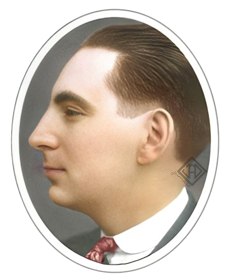

Despre George Călinescu
George Călinescu: Arhitectul literaturii românești
George Călinescu este una dintre cele mai influente personalități ale culturii române, având un rol esențial în definirea literaturii naționale. Prin opera sa monumentală și abordarea sa critică inovatoare, a reușit să structureze și să ofere coerență unui patrimoniu literar complex. În continuare, vom explora biografia sa, formarea intelectuală și contribuțiile care i-au adus titlul de „arhitect al literaturii românești.”

Biografie: Cronologia vieții lui George Călinescu
Născut pe 19 iunie 1899, la București, George Călinescu a avut o carieră remarcabilă în lumea literară românească.
Educația și cariera universitară
După absolvirea Liceului Gheorghe Lazăr, Călinescu a urmat Facultatea de Litere și Filosofie din București, unde a studiat sub îndrumarea unor mari critici și filosofi ai vremii. A devenit cunoscut pentru abordările sale critice și, ulterior, a ocupat funcții universitare la Iași și București, influențând generații de studenți.
Implicarea în viața publică
În anii interbelici, Călinescu a fost activ în presa culturală și literară, publicând articole în reviste de prestigiu precum „Viața Românească” și „Adevărul”. A devenit un critic influent, cunoscut pentru stilul său inovator și polemic.
Formarea intelectuală și influențele critice
Formarea intelectuală a lui Călinescu a fost marcată de influența criticilor francezi Sainte-Beuve și Hippolyte Taine. Aceștia au jucat un rol important în dezvoltarea unei abordări critice bazate pe analiza biografică și contextuală.
Călinescu a fost influențat de critica biografică și istorică, dar a adus un plus de profunzime prin integrarea contextului social și politic al vremii. În opera sa, el a încercat să exploreze legăturile dintre viața autorilor și operele lor, contribuind la o înțelegere mai amplă a literaturii.
Contextul socio-politic
Epoca interbelică, cu toate frământările sale politice și culturale, a jucat un rol esențial în modelarea viziunii lui Călinescu asupra literaturii, care încerca să găsească un echilibru între influențele europene și specificul național.
